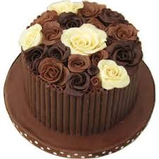

<DOCTYPE html>
	<html>
	<head>
	</head>
	<body background="i.jpg">
		<!-- <marquee direction="left">.<br> -->
		</marquee>
		<marquee direction="left" <h1><font size="8" color="blue"><b>A little bliss in every bite,A special cake for a special day</b><br><B>Art of cakes,Baked fresh for you.</h1></B></font></marquee>

		
		
		
		
		
		

		<h1><font>Select Size from the list </font></h1>
	<select id="mySelect" onchange="myFunction()">
		<option value="Small :$10">Small</option>
			<option value="Medium :$20">Medium</option>
				<option value="Large :$30">Large</option>
		</select>
		<p><font color="red"><B>The Cake you have selected is</B></font></p>
		<p id="demo"></p>

<script>
function myFunction() {
    var x = document.getElementById("mySelect").value;
    document.getElementById("demo").innerHTML = "You selected: " +x;
}
</script>
	

		<!-- <font><h1>
			<label>Select Size</label><br>
			<select>
				<option>--Select Size--</option>
				<option>Small</option>
				<option>Medium</option>
				<option>Large</option>
				</select>
				</h1>
			</font> -->
			<table border= "1"><h1>
				<tr>
					<th>SIZE</th>
					<th>RATE</th>
				</tr>
				<tr>
					<td><B>Small</B></td>
					<td><B>$10</B></td>
					<tr>
						<td><B> Medium</B></td>
						<td><B>$20</B></td>
						<tr>
							<tr>
						<td><B>Large</B></td>
						<td><B>$30</B></td>
						<tr>
						</h1>
				</table>

		
		

	<!-- <h2>Magic cake</h2>
		<p>Magic Cake has a seemingly simple batter, that is mixed and baked as a single entity. (See link for the full recipe and method). When it is baked, it separates into three distinct layers: A dense bottom layer. A custard middle layer
		Magic Cake! Where do I begin? I started out very skeptical when I saw this cake on foodepix.com. The name intrigued me at first. I had to click to see the recipe just to see why this cake is called magic cake, because there really is no such thing. Unfortunately the recipe was in another language, but there’s always google translator, the only problem is you know you always lose something in the translation. But not to worry, it was enough for me to realize why this cake is called magic cake.If you look closely enough you can see this cake has 3 layers, with a layer of custard in the middle. </p>
		<p>The way it looks it almost reminded me of a Napoleon dessert. So at first sight you might think this cake is a lot of work where you make the cake separately and the custard separately and you cut the cake in half and put custard in the middle and so on. Not at all! This truly is a magic cake and what happens is pure magic. OK maybe not, but close enough.</p>
		 -->
		
</body>
	</html>